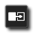
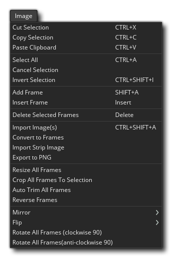
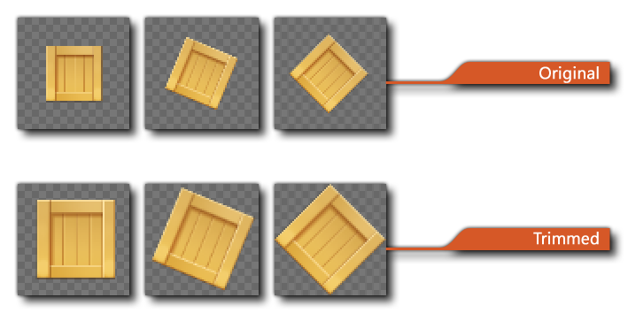
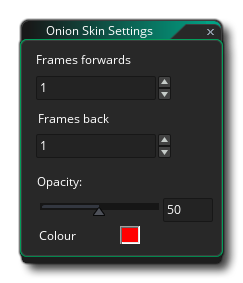

你可以在图像编辑器中创建自己的精灵或编辑先前导入或创建的精灵。 如果你以前使用过任何图像工具，那么你应该对此很熟悉，但在使用 GameMaker Studio 2 图像编辑器时有一些注意事项可能不会立即显现：
- 当你创建多个帧时，你可以在它们动画时绘制它们！因此，如果你按下 帧控制栏 上的播放按钮，然后选择画笔并开始在编辑器窗口中绘制，你将看到编辑器中播放每一帧的动画，并且你绘制的内容将添加到相应的那一帧。你可以尝试不同的帧速率，直到得到你喜欢的东西，但是一旦掌握了它的工作方式，你就可以立即创建动态精灵和效果。
- 你可以将“图像编辑器”选项卡从主工作区窗口拉到其自己的窗口中。 例如，当使用多个屏幕窗口时，这可能很方便。
- 例如，当你使用复制功能复制图像选择时，复制的选择将添加到画笔列表中。 这意味着你可以选择图像的一部分，然后在其余的绘画工具中使用它来绘制线条、多边形或只是自由绘制。刷子可以缩放并混合颜色。 请注意，粘贴 功能不适合在编辑器内部使用，因为你复制的任何内容都会添加到画笔列表中，以便你可以用复制的内容作为笔刷涂抹。 而粘贴只是为了从外部程序捕获某些内容并将其粘贴到图像编辑器中。
- 借助方便的层编辑器，每个精灵可以有多个层。这些层可以排序甚至放置在文件夹中，以便更轻松地创建更复杂的图像。
这些只是图像编辑器提供的一些更高级的功能。要了解完整的功能，请阅读以下详细介绍编辑器各部分功能的小节：
窗口的这一部分按照它们将被动画化的顺序显示帧。你可以单击左侧的（+）按钮以添加更多帧 - 或使用 图像 菜单 - 你还可以单击并拖动任何一帧改变其沿时间轴的位置。在“帧视图”的左上角，你可以选择“切换洋葱皮模式” ，这意味着在精灵动画的单个帧中，你可以选择将前面或后面的帧看作目前正在编辑图像框下的半透明层。关于这一点的好处是每一帧的绘制比最后一帧略亮，因此你可以看到动画在绘制下一个帧时帧与帧的进展情况。启用此选项将显示对帧的一些额外控制，你可以单击并拖动以设置要显示的前一帧的数量以及后一帧的数量。
在切换洋葱皮模式按钮下方，你有一个循环控制按钮
，用于设置精灵是否循环（到达最后一帧时返回到第1帧）或类似乒乓球（在到达最后一帧时掉头向后移动）。底部的播放按钮
用于启动/停止动画的预览。
你可以单击帧以选择它进行编辑，并且所选帧的顶角将有一个删除图标
，你可以单击该图标从精灵中删除帧。你还可以单击多个帧上的
/
+
全选它们，在这种情况下，单击删除图标将删除 所有 选定帧。
此工具栏包含帧工具栏。在这里，你可以使用左侧的输入框设置应播放动画帧的速度。帧速度可以设置为 “FPS（cpu steps）” 或 “游戏 FPS（game steps）”。 可用的帧总数以及已选择的当前帧显示在右侧，你可以通过单击左侧的 图标折叠此栏（隐藏它）。请注意，此处用于动画速度的值还将 设置精灵在游戏中使用时的动画方式，无论是作为层上的精灵资源还是作为分配给实例的精灵，尽管你可以在运行时使用适当的 函数 和 变量 来修改它 。
画布控件处理主绘制画布及其内容如何显示的各个方面。选项有：
- 切换网格显示
: 这将打开/关闭画布网格。这是 GameMaker Studio 2 在主画布上绘制的网格，将其划分为多个部分，默认情况下设置为 1 像素。但是，如果单击网格菜单图标
，则将打开网格选项：
这些选项允许你设置网格颜色和透明度，以及沿 X 和 Y 轴的网格单元格大小。 你还可以选择在此处启用或禁用网格对齐（默认情况下禁用）。
- 画布缩放工具
： 这些按钮控制当前画布缩放级别。你可以放大或缩小，然后单击
按钮会将画布重置为1：1，并且开始编辑图像。 请注意，你也可以使用
进行放大和缩小，按
，使整个房间画布填充当前编辑器工作区（这将根据需要放大/缩小以使其适合）。
- 拆分画布
: 单击此按钮将在不拆分、水平拆分和垂直拆分之间循环。 在分割画布视图中，每个画布都有自己的一组画布控制栏，因此你可以缩小其中一个而放大另一个，例如，你可以编辑任一个画布，其中的更改将反映在另一个画布中。要更改画布视图切换，可以单击拆分选项
这是图像的主要编辑窗口。在这里，你可以在当前选定的 层 上使用右侧的 工具 进行绘制。你可以使用鼠标左键或右键进行绘制（并为 颜色选择器 中的每个颜色指定一种颜色），并使用编辑器右上角定义的 笔刷。你也可以使用
+
底部的这个小状态栏显示编辑器中选择工具的鼠标位置和宽度及高度的不同值。
在这里，你可以选择要绘制的笔刷默认情况下，你可以选择使用不同大小的方形和圆形笔刷，但你可以通过在图像 层 上绘画轻松创建自己的笔刷，然后选择要用于新画笔的部分并使用
按键即可将其删除。
此部分的顶部有一些数字或预定义的颜色色块，你可以选择它们，并且可以通过用按钮单击它们分别分配给鼠标左键
（你也可以通过单击色块旁的左右颜色互换按钮交换颜色）。所选颜色将在下方显示为鼠标图像旁边的色块，然后你可以单击这些颜色以打开 颜色选择器 窗口：
在此窗口中，你可以使用可用的滑块和小工具定义颜色，也可以直接设定 RGBA 值或 HVS 值。请注意，如果双击
因此，你可以在精灵图像中创建自定义调色板，然后使用它为资源树中的其他精灵设置调色板，或者你可以打开精灵图像并从资源树中的其他精灵导入调色板。
下面我们列出了默认情况下 GameMaker Studio 2 可用的工具 - 请注意，所有工具都可以与鼠标左键

这是画笔工具。它使用选定的笔刷以鼠标按钮的选定颜色进行绘制，你可以从图像编辑器的顶部栏设置大小以及启用/禁用平滑（插值）。请注意，你还可以通过按住 + Z 然后单击

这是橡皮擦工具。它使用选定的笔刷用鼠标点击擦除区域。选择此工具还会在编辑器的顶部栏中添加额外的工具，以允许你缩放画笔或启用/禁用平滑（插值）。 
这是填充工具。这将根据所选的透明度容差设置填充图像区域，你可以使用编辑器顶部栏中的容差滑块更改该设置。 
这是颜色删除工具。当你选择它时，你可以使用  这是颜色替换工具。当你选择它时，你可以使用 
该工具将在两点之间画一条线。使用任一按钮单击一次以创建第一个点，然后再次单击其他位置创建另一个点并加入它们。将使用所选画笔绘制线条以创建轮廓，你可以使用编辑器的顶部栏（尺寸，平滑（插值）等）编辑某些画笔属性。 此工具将绘制填充或轮廓矩形。如果单击图标的左上角，它将绘制轮廓，而点击右下角则填充，如果你需要两个，则可以从图像编辑器的顶部栏中选择该选项（或使用 并单击从鼠标位置的 中心 绘制。

此工具将绘制填充或轮廓椭圆。如果单击图标的左上角，它将绘制轮廓，而点击右下角则填充，如果你需要两个，则可以从图像编辑器的顶部栏中选择该选项（或使用 
此工具将绘制填充或轮廓多边形。如果单击图标的左上角，它将绘制轮廓，而点击右下角则填充，如果你需要两个，则可以从图像编辑器的顶部栏中选择该选项（或使用 
这是弧线工具。它使用选定的画笔创建弧线。单击并按住鼠标按钮设置点，然后拖动鼠标以生成曲线，释放鼠标并重复添加其他点和曲线。将使用所选笔刷绘制曲线，可以使用编辑器的顶栏编辑曲线的尺寸和平滑（插值）。 顶部栏还有一个 迭代 设置，它将定义生成曲线的平滑程度（更低的值将更粗糙，更高的值更平滑，默认值为 10）。 
这是文本输入工具。它会创建一个新的文本 层，你可以在其中键入所需内容。 你可以设置在图像编辑器顶部栏中设置要使用的字体以及格式。 取色器允许你从当前正在编辑的图像中采样颜色。 
使用此工具，你可以生成矩形选区。你可以从 图像 菜单中或按 取消选择。

使用此工具，你可以使用笔刷（包括自定义笔刷）“绘制” 选定区域。 所有相同的键盘快捷键都适用于选区笔工具。 魔棒工具将根据容差值设置选择相同颜色的区域。如果勾选 “仅颜色”，则不会考虑透明度。你可以从 图像 菜单中或按 
这是旋转笔刷工具。如果使用 “选择” 工具选择了某个区域，则单击此选项将允许你将所选区域从 0° 到 360° 旋转。 如果没有选择图像区域，则允许你旋转当前笔刷。 要旋转，只需按住鼠标左键 这是镜像笔刷工具。选择此选项将沿垂直方向翻转当前笔刷。此选项 不 会创建新笔刷，只会影响当前笔刷的绘制方式。 
这是翻转笔刷工具。选择此选项将沿水平方向翻转当前笔刷。 此选项 不 会创建新笔刷，只会影响当前笔刷的绘制方式。 
这是平移图像工具。 选择此选项后，可以单击
你可以在图像编辑器中为图像的不同部分创建 层，并且可以使用各种笔刷和工具操作和绘制这些层。要创建新层，只需单击
图标，然后再次单击将其删除
图标。也可以通过单击
按钮创建文件夹然后拖入层来进一步组织层。 如果双击
在这里，你可以命名层以及设置混合模式（它和与下面的层“混合”的方式），从 正常、相加、相减 或 相乘 混合中进行选择。最后，你可以使用滑块设置层的不透明度（透明度），但请注意，这与单个像素的实际透明度值 叠加 - 例如，像素本来的不透明度是50%，而你又将像素所在层不透明度设置为 50 ％，那么像素将以 25％ 的不透明度绘制。


右键菜单
除了图像编辑器本身的这些工具之外，还可以从 IDE 顶部的菜单栏中获得许多额外的工具： 
这些菜单说明如下：
 图像菜单有以下选项：
- 剪切帧 / 所选 - 从图像中剪切帧或选区（取决于编辑器焦点）。如果剪切所选，则会将其添加到 笔刷 中。
- 复制帧 / 所选 - 复制图像中的帧或选区（取决于编辑器焦点）。如果复制所选，则会将其添加到 笔刷。
- 粘贴帧 / 所选 - 从剪贴板粘贴帧，或从剪贴板粘贴图像到选区（取决于 IDE 的当前焦点）。 粘贴到图像时，应注意此选项 仅适用于来自外部程序的剪贴板数据。当你从图像编辑器中的图像剪切或复制到剪贴板时，会将其添加到编辑器右上角的笔刷中， 你应该选择要使用剪切/复制选区绘制的笔刷而不是尝试将它粘贴入图像。 另请注意，由于剪贴板使用的格式，许多程序在将剪贴板粘贴到 GameMaker Studio 2 图像编辑器时会出现问题。
- 全选 - 选择整个图像。
- 取消选择 - 清除已选区域。
- 反选 - 反向选择当前区域。
- 添加帧 - 向精灵添加新的一帧。
- 插入帧 - 向当前帧后插入新的一帧。
- 删除选定帧 - 从精灵移除选定帧（你可以使用
- 导入图像 - 从磁盘加载要用作帧的图像。请注意，你可以通过在资源管理器窗口中选择要导入的多个文件来一次加载多个帧。选择文件后，你将看到以下导入窗口：
在这里，你可以选择如何将导入的图像添加到当前精灵中，允许你调整整个绘制画布的大小，裁剪或填充它，还可以设置放置新图像的“锚点”位置。
- 转换为帧 - 此选项将单个图像转换为多个单独的帧。你必须首先创建一个包含动画的所有部分的单个帧（或导入单个条带图像），如下所示：
由于这是单个图像，我们想将其转换为单独的帧，我们可以使用此选项，然后打开以下窗口：
在这里，你可以设置如何分割单个图像以创建帧，设置帧数，帧的宽度和高度以及偏移值。
- 导入长带图 - 此选项将打开文件资源管理器，并提示你查找要用于创建帧的单个条带图像文件。选择图像后，导入条带图窗口将打开，与上面显示的 转换为帧 选项完全相同。
- 导出 PNG - 选择此选项会将精灵导出为单个 PNG 图像。如果精灵有多个图像，那么将一个接一个地创建所有图像的“条带”精灵，并且保存文件名将自动添加 “_stripX”，其中 “X” 是导出帧数。例如，五帧精灵将导出为 “sprite_name_strip5.png”。
- 调整所有帧的尺寸 - 当你选择此选项时，它将打开以下窗口，你可以在其中设置要调整构成精灵的所有动画帧的尺寸的方式：
你可以选择 缩放 图像，也可以选择 调整 画布大小。 如果你选择缩放图像，则只需为每个帧选择新的宽度和高度，是否使用相同的纵横比进行缩放，以及是否按像素或百分比进行缩放。 请注意，缩放时可以启用或禁用插值，打开或关闭图像会使像素模糊或“涂抹”图像缩放（如果你想要高分辨率的作品就打开，但如果你想要像素作品则关闭该选项）。
调整画布大小的选项不会改变图像中的像素，而是增加或减少绘制图像的画布大小。你可以使用箭头图标设置调整大小的“锚点”的位置，然后设置新大小（以像素为单位或以百分比表示）以及设置是否保持原始帧的宽高比。请注意，使帧小于原始精灵图像将裁剪像素。
- 裁剪所有帧保留选区内容 - 只有在主绘制画布中选择了图像区域时，才能使用此选项。然后，当你选择此选项时，正在编辑的图像（以及动画中的所有其他帧）将被裁剪到选区的边界。
- 自动裁切所有帧 - 此选项允许你修剪精灵边缘周围的所有零透明度像素。这将考虑精灵中的 所有 图像帧，因此每一边将裁剪到具有最远的非零透明度像素的帧的边缘。 
- 帧逆序 - 会颠倒精灵中帧的顺序。
- 镜像 - 此选项允许你沿垂直轴翻转构成精灵的所有帧的当前帧。
- 翻转 - 此选项允许你沿垂水平翻转构成精灵的所有帧的当前帧。
- 旋转所有帧（顺时针 90°） - 将所有帧顺时针旋转 90°。
- 旋转所有帧（逆时针 90°） - 将所有帧逆时针旋转 90°。
“视图”菜单具有以下选项：
- 1:1 - 使用分辨率（即：实际尺寸）将图像缩放为1：1，并将其居中放置在图像编辑窗口中。
- 适应屏幕 - 缩放图像以填充图像编辑窗口。
- 切换网格 - 切换像素网格。这与画布工具栏中的切换网格按钮相同（本页进一步说明）。
- 洋葱皮设置 - 修改洋葱皮设置。这将打开以下窗口，你可以在其中设置洋葱皮按钮显示的帧，以及蒙版帧的不透明度和颜色。 
你可以在 “效果” 菜单中添加自定义效果插件，默认情况下具有以下效果：
- 模糊 - 对图像应用模糊效果。你可以设置强度以及要使用的模糊类型（方形或高斯），并设置是仅沿水平轴还是垂直轴模糊，还是沿两者模糊。然后，你可以选择仅将其应用于当前层，可见层或所有层。
- 灰阶 - 以确定的量去除图像的饱和度。你可以选择仅将其应用于当前层，可见层或所有层。